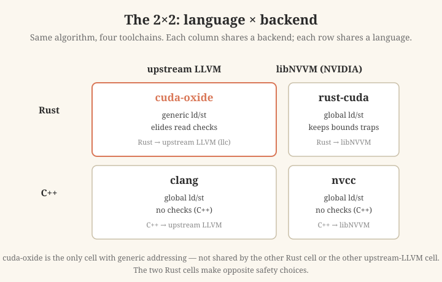
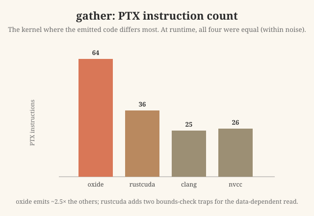
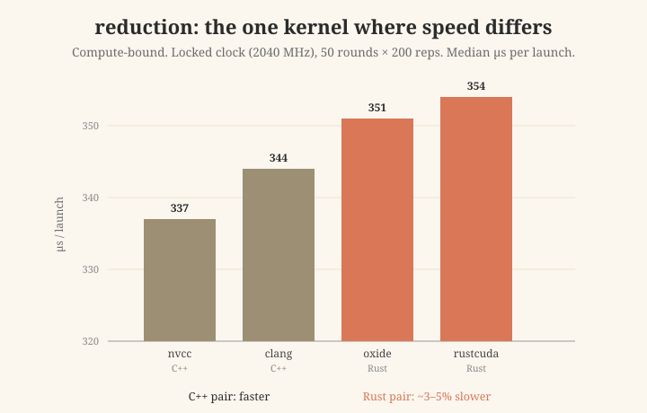

The short version
- In an earlier post I compared three compilers for the same GPU kernels: cuda-oxide (safe Rust to PTX), clang (CUDA C++, upstream LLVM), and nvcc (CUDA C++, NVIDIA's libNVVM).
- That post had one weakness: it had only one Rust compiler. So when Rust looked different, I could not tell if the cause was "Rust" or "a different backend".
- This post fixes that. I add a fourth compiler, rust-cuda, which is Rust but uses NVIDIA's libNVVM backend. Now I have a 2×2: language (Rust or C++) times backend (upstream LLVM or libNVVM).
- Addressing: only cuda-oxide uses "generic" memory loads. The other three (including the other Rust compiler) use "global" loads. So this is a cuda-oxide detail, not a "Rust" or "upstream LLVM" effect.
- Safety: the two Rust compilers make opposite choices. rust-cuda keeps the array bounds check and adds a GPU
trap. cuda-oxide removes the bounds check on reads. This is the clearest new point in this post. - Speed: on memory-heavy kernels, all four run at the same speed. On the compute-heavy kernel, the two C++ compilers are about 3 to 5 percent faster than the two Rust compilers. The order is stable, but I did not prove the cause.
Where this comes from
My previous study asked a simple question: does writing a GPU kernel in safe Rust cost anything in the machine code, compared to C++? It compared three compilers on three small kernels. The result was: mostly no cost, with a small gap on one compute-heavy kernel.
But three compilers is not enough to answer "why". cuda-oxide is Rust and it uses the upstream LLVM backend. So if it behaves differently, two things could explain it: the language (Rust), or the backend (upstream LLVM). With only one Rust compiler, I could not separate these two causes.
The 2×2 idea
To separate them, I need a Rust compiler that uses the other backend. That compiler is rust-cuda (the Rust-GPU project's rustc_codegen_nvvm). It compiles Rust, but it lowers the code through NVIDIA's libNVVM, the same backend family that nvcc uses.
Now the four compilers form a clean 2×2 grid. This grid is the whole point of this post. If I see an effect, I can now ask: does it follow the row (the language) or the column (the backend)?

The four compilers as a 2×2. Each column shares a backend; each row shares a language. cuda-oxide is highlighted because it is the only cell that uses generic addressing — a behavior not shared by the other Rust compiler or the other upstream-LLVM compiler.
Quick note for context: the rust-cuda team itself says libNVVM has private optimizations that the upstream LLVM PTX backend does not, and that this can matter on bigger kernels. So a backend effect is plausible in advance. My job is to check what the data actually shows.
The four versions of each kernel
I use the same three kernels as before:
- vecadd:
c[i] = a[i] + b[i]. The simplest case. - gather:
out[i] = src[indices[i]]. The read position depends on data, so the compiler cannot prove it is in range. This is the kernel that stresses safety the most. - reduction: sum many numbers using shared memory and a barrier. This kernel does real work per thread.
One honest point up front: the four versions are the same algorithm, but each is written in its own natural style, not as byte-identical code. For example, cuda-oxide writes its output through a safe type called DisjointSlice. rust-cuda has no equal to this, so it writes through a raw pointer, like C++. Because of this, the number of kernel arguments is not the same in every version (a Rust slice carries a length; a raw pointer does not). So raw "instruction counts" mix two things: the compiler, and what the source code asked for. I keep this in mind and lean on the clear, yes/no signals (which kind of load; is there a trap) more than on exact counts.
What I measured
Two halves, the same as the previous study.
Static (the emitted code). For each kernel and each compiler I produce PTX (the assembly-like code CUDA uses). I run the same ptxas assembler on all four, at the same settings (sm_89, -O3). Then I read register use and disassemble to SASS (the real machine code). Using one shared assembler means the only thing that changes is the compiler's PTX, not the assembler.
Runtime (the speed). I take each compiler's PTX, build it into a cubin with that same ptxas, load it through the CUDA driver, and time it with CUDA events. Every version runs through the same launch code with the same data. So the only difference is the compiled kernel. I tested on an NVIDIA L4 GPU.
Finding 1: addressing is a cuda-oxide detail, not a Rust or LLVM detail
In the emitted code, cuda-oxide is the only one that uses generic loads and stores (ld/st without a fixed memory space). The other three use global loads and stores (ld.global/st.global), which name the memory space directly.
This is exactly where the 2×2 helps. cuda-oxide is Rust and upstream LLVM. But:
- rust-cuda is also Rust, and it uses global loads.
- clang is also upstream LLVM, and it uses global loads.
So "generic addressing" does not follow the Rust row or the upstream-LLVM column. It is specific to cuda-oxide's own lowering. My previous post saw the generic loads but could not rule out "Rust" or "upstream LLVM" as the cause. Now I can: it is neither.
Update (July 2026): this finding has since changed. On a newer cuda-oxide backend, the generic loads became global loads (matching the other three compilers), so this addressing difference no longer holds. Re-testing also revealed a dropped bounds check that lets safe Rust code read out of bounds. See the follow-up: Benchmarking a moving target.
Finding 2: the two Rust compilers make opposite safety choices
This is the clearest new result in this post.
In Rust, reading a[i] includes a bounds check. If i is out of range, normal Rust panics. On a GPU there is no panic, so the check becomes a trap instruction (it stops the thread).
The two Rust compilers handle this very differently. I read the actual gather PTX to be sure, instead of guessing.
- rust-cuda keeps the check. Its gather PTX has two traps, and both are real bounds checks. The first compares the thread index
iagainst the length of theindicesarray; ifiis too big, it jumps to atrap. Only then does it loadindices[i]. The second check is the interesting one: it takes that loaded value and compares it against the length of thesrcarray, before readingsrc[indices[i]]. If the loaded index is out of range, it traps. This is a true runtime bounds check on a data-dependent index — exactly the case the compiler cannot prove safe in advance, so it must check at runtime. - cuda-oxide does not check the reads. Its gather PTX has no trap. It loads
src[indices[i]]directly, with no bounds check. An out-of-range read does not stop the thread. (This matches what I found in the previous study, and it matches cuda-oxide's own docs: writes through its safe type are checked, but reads are not.)
So here are two compilers, both "safe Rust to GPU", that make opposite choices on the exact case where it matters most: an index the compiler cannot prove. rust-cuda checks the index at runtime and traps if it is out of range; cuda-oxide does not check it. If you care about catching out-of-range GPU reads, this difference is important, and it is easy to miss.

gather is the kernel with the largest difference in the emitted code: cuda-oxide emits about 2.5× the instructions of the C++ compilers, and rust-cuda adds two bounds-check traps for the data-dependent read. Yet at runtime all four were equal within measurement noise (about 5694 µs), because this kernel waits on memory.
Finding 3: speed — careful with this one
Here I am extra careful, because speed claims are easy to get wrong.
Memory-bound kernels (vecadd and gather): all four are the same. On vecadd, all four are within a fraction of a percent (about 807 microseconds, about 249 GB/s). On gather, all four are the same within measurement noise (about 5694 microseconds). Note this well: gather is the kernel with the biggest difference in the emitted code, yet the smallest difference in speed. The reason is simple: these kernels wait on memory. The GPU spends its time fetching data, so a few extra instructions do not change the wall-clock time. The kept safety check in rust-cuda costs nothing here.
I do not report these as exact tiny percentages. The differences are smaller than the timing noise, so the honest statement is "the same within noise".
Compute-bound kernel (reduction): a small, real gap, cause unknown. reduction does real work per thread, so the code quality can reach the clock. To measure it well, I locked the GPU clock at 2040 MHz and used many more repeats. The two C++ compilers are about 3 to 5 percent faster than the two Rust compilers. This order was stable across repeated runs, and even the fastest single runs (the minimums) do not overlap between the C++ group and the Rust group. So the gap looks real, not just noise.

reduction median time per launch (locked clock, 50 rounds × 200 reps). The two C++ compilers are a little faster than the two Rust compilers. Note: the axis starts at 320 µs to make the small gap visible. The cause is not established, and it is not a pure backend effect — if it were, the two libNVVM tools (nvcc and rust-cuda) would group together, and they do not.
But I want to be honest about two things:
- It is not a pure backend effect. If the backend alone explained it, the two libNVVM compilers (nvcc and rust-cuda) should group together. They do not: nvcc is the fastest and rust-cuda is the slowest, even though both use libNVVM. So "libNVVM is just faster" does not explain this result.
- I did not prove the cause. The gap lines up with language (both C++ ahead of both Rust). But I cannot yet say why. It could be the kernel code, or a smaller detail like the extra length arguments that Rust slices pass to the kernel. More work is needed to find the real cause. I am not claiming one.
Update (July 2026): the cause is now found — it was a 64-bit loop counter. See the follow-up post: Found it: the Rust GPU speed gap was a 64-bit loop counter.
What is new here, and what was already known
I want to be clear and fair about this.
Already known:
- "Safe Rust on the GPU can be as fast as C++ when the kernel is memory-bound" — I showed this in my previous post.
- "cuda-oxide is a few percent slower on the compute-bound kernel" — also in my previous post.
- "libNVVM has optimizations the upstream LLVM PTX backend lacks" — this is stated by the rust-cuda project itself.
New in this post:
- The 2×2 with rust-cuda added, which lets me separate language from backend. The previous post could not do this.
- The result that the simple stories do not fully hold: the reduction gap is not a pure backend effect, and the addressing difference is not a Rust or upstream-LLVM effect.
- The safety contrast between the two Rust compilers (rust-cuda keeps the trap; cuda-oxide removes the read check). This is the most concrete new point.
So this is a careful follow-up, not a big discovery. Its value is that it tests the obvious explanations and shows where they break.
Honest limits
- Only three small kernels. Real kernels are bigger and may behave differently.
- Only one GPU (L4). Other GPUs may differ.
- The four versions are the same algorithm but not byte-identical source, so instruction counts mix compiler and source.
- The cause of the reduction gap is not established.
- Both cuda-oxide and rust-cuda are early-stage (alpha) projects. Their output will change over time, so these exact numbers are a snapshot.
Reproduce it
All code, the emitted PTX/SASS, the CSV results, and a full methodology are in the repo: github.com/midiareshadi/rust-cuda-vs-oxide. The repo lists every step, so you can rebuild the whole 2×2 yourself.